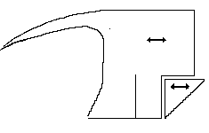

Hood design based on no. 174, as presented in Textiles and Clothing. It was in a late 14th Century deposit, and was of a tabby woven cloth. A triangular piece, apparently cut from the "chin" of the hood is inserted as gussetts in the front of the hood. It has a short liripipe.
Return to Contents or London Site Page
Some Clothing of the Middle Ages - Hoods - London Hood [150] <3401/34> TB76, by I. Marc Carlson, Copyright 1996 This code is given for the free exchange of information, provided the Author's Name is included in all future revisions, and no money change hands-